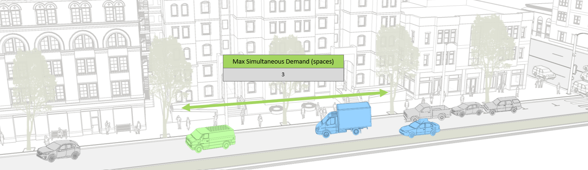
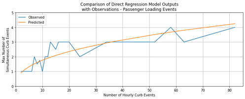
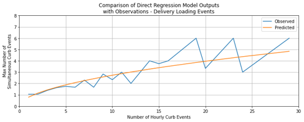
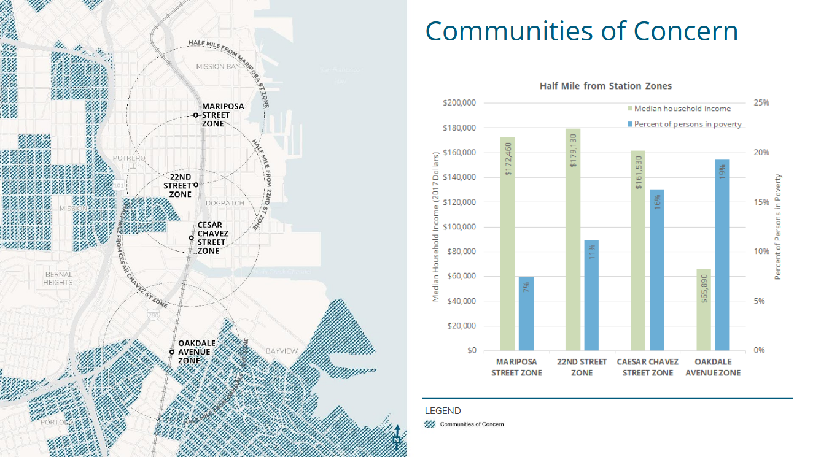
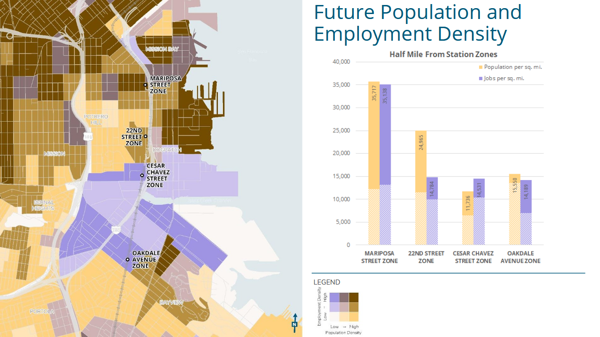
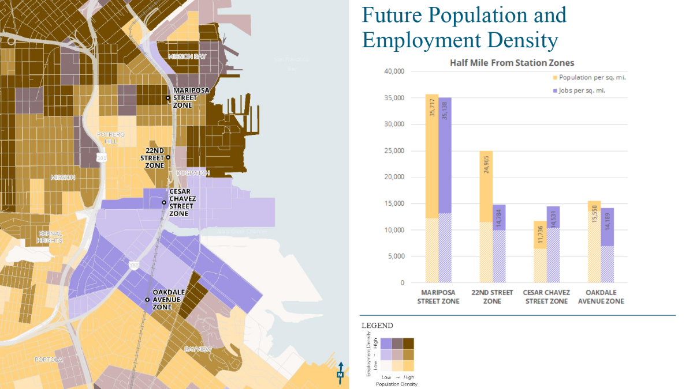
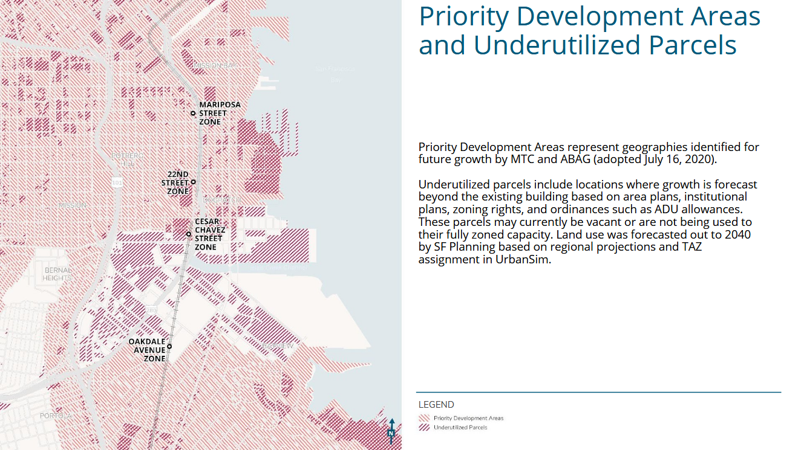
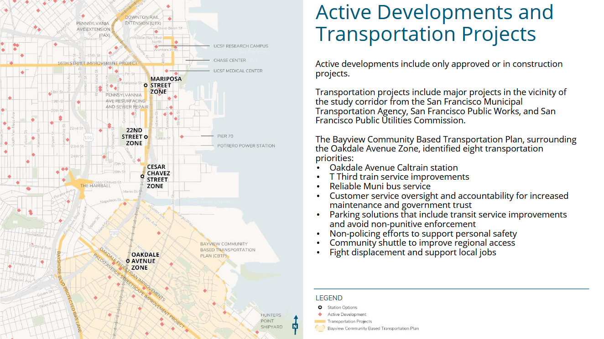

Fehr & Peers Internship
August, 2020
This past summer I worked as a Transportation Engineering/Planning Intern for Fehr & Peers. As an intern I worked with transportation professionals and clients to validate transportation models and develop new tools for project development. Below are a couple examples of projects I worked.
CurbSpace+
One project I worked on was a tool to determine the amount of spaces needed to accommodate peak passenger and delivery loading based on land use, size, and setting. To create the tool I trained and tested a statistical model to calculate peak vehicle events based on observed curb studies in San Francisco. It will be used to improve flexibility in city space as the mobility landscape continues to rapidly change.
 
22nd Street Station
Another major project involved developing and visualizing existing conditions in Mission Bay, San Francisco. Caltrain is looking into alternative locations for the existing 22nd Street Station as part of the Pennsylvania Avenue Extention (PAX) project. The current location is not frequently served and is poorly located under a highway overpass. Below are some of the maps I created to inform our client how to possibly site the new station.




